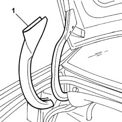
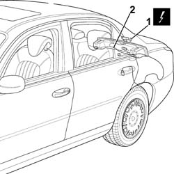

5505B50 Boot lid integrated wiring - R.R. with inner lining removed
- Path
- Procedures > 55 ELECTRICAL EQUIPMENT > 5505 INSTRUMENT/GAUGE ELECTRICAL CIRCUITS > 5505B door,boot and bonnet wiring > 5505B50 Boot lid integrated wiring - R.R. with inner lining removed
- Kind
- repair procedure (removal / refitting; the operation number is the code)
- Applies to
- all engines; all production periods
- Interactive page
- https://sloeber94.github.io/elrnDB-lThss/en/#/145780
Applies to: all engines; all production periods
 Removing
Removing
 Refitting
Refitting1. Release the protection for the boot lid hinge and remove it.

Applies to: all engines; all production periods
1. Disconnect the electrical connectors for the boot lid integrated wiring.
 | Description | Connector |
|---|---|---|
1 | Rear/boot coupling | D040 |
| Description | Connector |
|---|---|---|
1 | Left rear light cluster (moving section on boot lid) | F035 |
| Description | Connector |
|---|---|---|
1 | Boot aerial | P013 |
| Description | Connector |
|---|---|---|
1 | Right rear light cluster (moving section on boot lid) | F036 |
| Description | Connector |
|---|---|---|
1 | Boot lock geared motor | N057 |
2. Remove the boot lid integrated wiring after having released it from the retaining springs.

Applies to: all engines; all production periods
Refitting
Removing- Check that the wiring is not damaged and that the individual conducts are correctly fastened to the connections.
- If necessary, carry out continuity tests.
- Position the integrated boot lid wiring in place and secure it to the retaining springs.
- Connect the electrical connectors.
| Description | Connector |
|---|---|---|
Rear/boot coupling | D040 |
| Description | Connector |
|---|---|---|
Left rear light cluster (moving section on boot lid) | F035 |
| Description | Connector |
|---|---|---|
Boot aerial | P013 |
| Description | Connector |
|---|---|---|
Right rear light cluster (moving section on boot lid) | F036 |
| Description | Connector |
|---|---|---|
Boot lock geared motor | N057 |
- Fit the protection for the boot lid hinge.